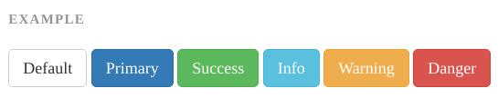
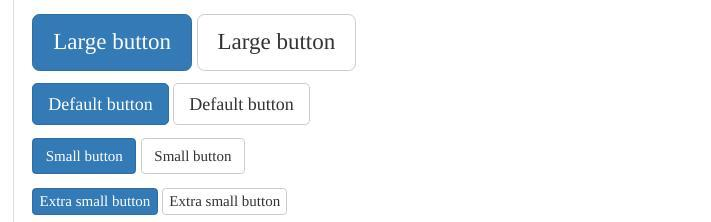
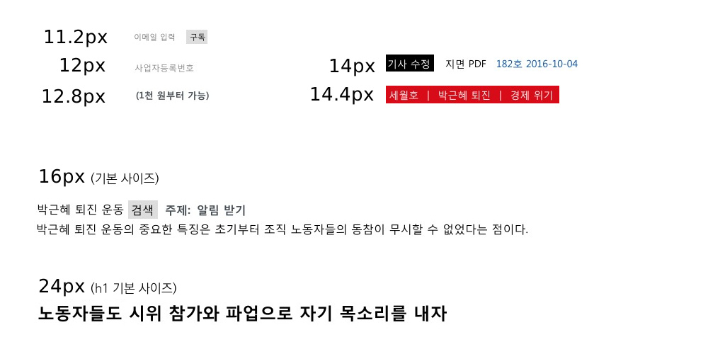

WSConf.Seoul 2016
안형우 노동자 연대
.issue { ... }
.issue h2 { ... }
#intro h1 { ... }
#intro .main { ... }
#intro .main h1 { ... }한 화면에 담으려고 한 줄로 썼습니다.
Our CSS best practice are killing us.
by Nicole Sullivan
.issue h2 { ... }
.issue ul { ... }
.issue ul li a { ... }
.issue ul li a.more { ... }
.news h2 { ... }
.latest h2 { ... }
.related h2 { ... }.issue h2 { ... }
.issue ul { ... }
.issue ul li a { ... }
.issue ul li a.more { ... }
.news h2 { ... }
.news ul { ... }
.news ul li a { ... }
.news ul li a.more { ... }
.latest h2 { ... }
.latest ul { ... }
.latest ul li a { ... }
.latest ul li a.more { ... }
.related h2 { ... }
.related ul { ... }
.related ul li a { ... }
.related ul li a.more { ... }
#sidebar .issue h2 { ... }
#sidebar .news h2 { ... }
#sidebar .issue ul { ... }
#sidebar .latest h2 { ... }
#sidebar .related h2 { ... }
#article-footer .issue h2 { ... }
#article-footer .news h2 { ... }
#article-footer .issue ul { ... }
#article-footer .issue ul li a { ... }
#article-footer .issue ul li a.more { ... }
#article-footer .latest h2 { ... }
#article-footer .related h2 { ... }@import 'nomalize.css';
html {
font-size: 100%;
font-family: 'Apple SD Gothic Neo', 'Malgun Gothic', 'KopubDotum', sans-serif;
...
}
기본 스타일을 갖추고 출발할 수 있게 해 준다.
input, textarea {
font-family: inherit;
line-height: inherit;
color: inherit;
} 폭포(Cascade)처럼 흐르게 하고 필요한 놈만 저격하자.
CSS의 시맨틱 ≠ 내용의 시맨틱
<h2>뉴스</h2>
<ul class="news">
...<h2>뉴스</h2>
<ul class="simple-list">
...by 니콜 설리반, 2009
.blue-button {
line-height: 20px;
background-color: blue;
...
}.red-button {
line-height: 20px;
background-color: red;
...
}.button {
line-height: 20px;
...
}
.button-blue {
background-color: blue;
}
.button-red {
background-color: red;
}
#article h2 { font-size: 24px; }
#article h3 { font-size: 20px; }
#sidebar h2 { font-size: 20px; }
#sidebar h3 { font-size: 16px; }
#footer h2 { font-size: 16px; }
#footer h3 { font-size: 14px; }.u-h2 { font-size: 24px; }
.u-h3 { font-size: 20px; }
.u-h4 { font-size: 16px; }
.u-h5 { font-size: 14px; }
...
.media 객체<div class="media attribution">
<a class="img" href="...">
<img src="..." alt="...">
</a>
<div class="bd">...</div>
</div>.media 객체.media {
margin: 10px;
}
.media, .bd {
overflow: hidden;
}
.media .img {
float: left;
margin-right: 10px;
}
.media .img img {
display: block;
}
.media .imgExt {
float: right;
margin-left: 10px;
}.btn 객체
<button class="btn btn-primary">.btn 객체
<button class="btn btn-lg btn-primary">| id | class | tag | |
|---|---|---|---|
#sidebar h2 |
1 | 0 | 1 |
.box.bordered |
0 | 2 | 0 |
.u-h2 |
0 | 1 | 0 |
.bordered |
0 | 1 | 0 |
자세하게 알고 싶으면 MDN의 명시도 참고
도구2. 태그 선택자 사용 자제
ul.navdiv.box도구2. 태그 선택자 사용 자제
.title span
박근혜는
즉각
퇴진하라
베이스 잡을 때를 말하는 건 아니다.
도구2. 태그 선택자 사용 자제
.color-primary
박근혜는
즉각
퇴진하라
도구1~2. 특정도와 태그 선택자
.btn { ... }
.uilist a { ... }<nav class="uilist">
<a>소개</a>
<a class="btn">로그인</a>
</nav>href 속성은 생략했습니다.
도구1~2. 특정도와 태그 선택자
.btn { ... }
.uilist-item { ... }<nav class="uilist">
<a class="uilist-item">소개</a>
<span class="uilist-item">
<a class="btn">로그인</a>
</span>
</nav>도구3. 재사용성을 확보하는 이름
.blue-title.text-primary도구3. 재사용성을 확보하는 이름
.bottom-items.card도구4. 기본 모듈을 갖추자
도구5. 타이포그라피 전략을 세우자
객체에서의 폰트 지정은 최소화
도구5. 타이포그라피 전략을 세우자
도구5. 타이포그라피 전략을 세우자
/* text align */
.u-text-right
.u-text-center
/* font size */
.u-text-tiny
.u-text-small
.u-text-large
/* font color */
.u-color-primary
.u-color-secondary
.u-color-muted
.u-color-highlight
/* remove underline */
.u-text-no-deco
미완노트
응용사례 이미지
골격과 겉모양 표시
타이포와 너비는 유틸리티로 하고 두 객체를 결합한 거
예외
예외
.content h2예외
예외라기보단...
헤터, 푸터, 콘텐츠 영역, 로고...
오용1. Sniping Type에서 Snake Type으로...
#article-footer .issue ul li a.more↓
.article-footer_issue_ul_li_a_more.mt10 .mt20 .mt30 .mt40 .mt50 .mt60 .mr10 .mr20 .mr30 .mr40 .mr50 .mr60 .f10 .f11 .f12 .f13 .f14 .f15 .f16 .f17 .f18 .f19 .f20 .ffnanum
+ minify, 변수, 함수, 확장, 재사용성
http://mytory.netmail@mytory.net